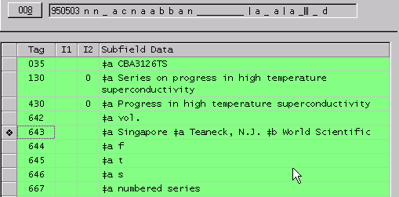

Contact
Princeton University Cataloging Documentation
Contact |
Princeton University Cataloging Documentation |
SERIES
Verification Return to Series main Interpreting
NAF series authority records See also |
Interpreting Voyager and NAF Series Authority RecordsVoyager series authority record 008 Type of series = SRT in RLIN
NAF authority recordID:NAFL86724955 ST:p EL:n STH:a MS:c UIP:a TD:19880826123550KRC:a NMU:a CRC:c UPN:n SBU:a SBC:a DID:n DF:08-09-88 RFE:a CSC: SRU:a SRT:a SRN:a TSS: TGA:? ROM:? MOD: 040 DLC$cDLC$dDLC
Following are the values for our traditional series decisions:
|
| ©2008 Princeton University Last Modified 11/14/2002 |